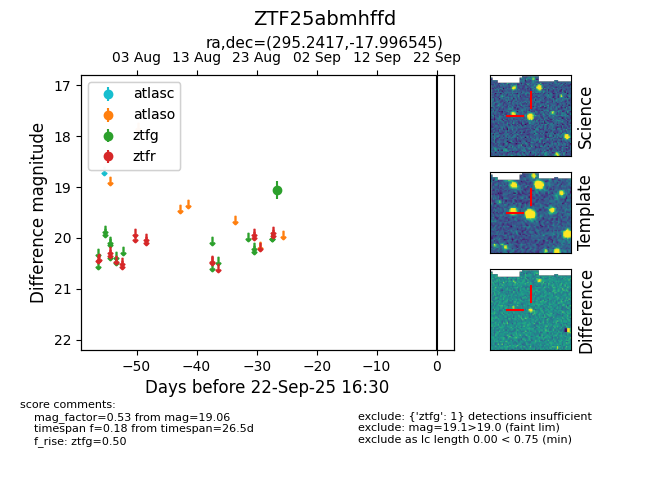

FINK: ZTF25abmhffd
Lasair: ZTF25abmhffd
ALeRCE: ZTF25abmhffd
ZTF25abmhffd (ztf,fink)
equatorial (ra, dec) = (295.2417,-17.99654)
galactic (l, b) = (21.8484,-18.80728)

last ztfg=19.06
1 ztfg detections